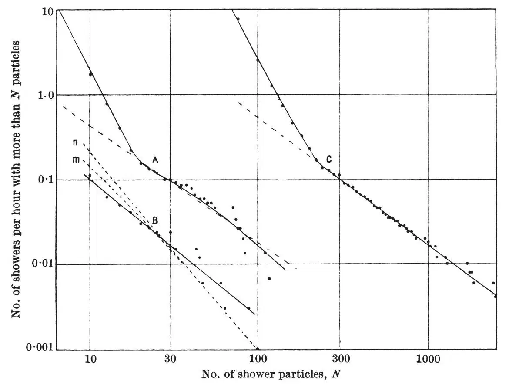
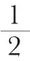

中文
中文H. Carmichael and C. N. Chou
Editor’s Note
Since the beginning of the twentieth century, the study of cosmic rays had preoccupied a great many physicists for a number of reasons. First, they appeared to consist of fast-moving particles whose identity was for a long time unknown. The energy of these particles was much higher than could be created artificially in the laboratory, and they seemed to offer clues to the nature of phenomena and matter at great distances in the Universe. This paper is based on observations carried out under 30 metres of London clay on the disused part of a platform in Holborn Station on London’s Underground railway network. The object of the experiment was to measure the numbers of showers of cosmic-ray particles created within electrically sensitive ionization chambers. Curve C represents the results of an experiment at the surface of the Earth, A an experiment running for 150 hours at the Underground station itself and B an experiment lasting 350 hours. The bends in the experimental curves A and C are taken to indicate a change in the mechanism of the production of showers of cosmic-ray particles. 中文
COSMIC ray ionization bursts produced by showers of ten or more particles in a small ionization chamber (volume 1 litre) have been recorded at sea-level in Cambridge and, thanks to the hospitality of Prof. P. M. S. Blackett and Dr. H. J. J. Braddick, under 30 m. of clay in London. The data discussed here, curves A (150 hours) and B (350 hours), are from runs with no lead or other dense shower-producing material above the chamber (the wall of the chamber was of duralumin, 1.2 cm. thick, so as to avoid as much as possible showers produced by cascade multiplication in the chamber itself). Curve C (500 hours) is the result of similar observations at sea-level with a large ionization chamber (volume 175 litres, wall-thickness 0.3 cm. of steel), most of which were published by one of us1 in 1936, when the method of recording was also described. The curves show the number of showers per hour in which N or more particles intersected the ionization chamber; the number of shower particles N was estimated on the basis of a specific ionization in normal argon of 90 ion-pairs per cm. 中文
The ionization bursts obtained at sea-level with the big ionization chamber (curve C) involve much larger numbers of shower particles than those obtained with the small chamber (curve A), and also each curve has a remarkable change of slope at a rate of occurrence about 0.16 per hour. The curves, however, can be superposed fairly closely if the size of the showers in the small chamber is multiplied by 10. We deduce from this approximate proportionality of the size of these showers (as distinct from their rate of occurrence) to the areas of the thin-walled chambers used to observe them that they are mostly extensive showers, originating in the atmosphere, of the same type as those found by Auger and his co-workers2 with counters. We should not expect to find exactly the ratio of the areas (approximately 1∶30) because narrow showers or condensations of rays of cross-section smaller than the area of the large chamber tend to increase disproportionately the bursts in the small chamber. 中文

The bursts which are found underground (curve B) must be produced by the penetrating component of the cosmic rays. We have calculated the distribution curve to be expected in the tube station for cascade showers produced by electrons “knocked on” by mesons using the data given in the paper by Bhabha4 in which, however, the meson was assumed to have spin

. We adopted, following Euler and Heisenberg3, an exponent 1.87 for the integral energy distribution of the mesons originating in the atmosphere. The calculation shows (curve m) that the showers resulting from this process alone are nearly sufficient to account for the bursts recorded underground, if we assume that the cross-sectional area of the showers underground is not much greater than the area of the chamber (actually more of the larger bursts are found than are given by this calculation, but the theoretical implications of this discrepancy will be discussed later). 中文
At sea-level a similar calculation (curve n) gives much fewer bursts than are observed even if we suppose that the showers are so narrow that all the shower particles in any one burst can intersect the small chamber: but we already know that most of the showers observed at sea-level are at least wider than the large chamber. We therefore conclude that a negligible number of the extensive showers observed at sea-level is produced by electrons knocked-on by mesons. It would seem also that an insufficient number of such showers can be produced by the spontaneous decay of the meson, a process which might be invoked to explain the steeper parts of the sea-level curves. 中文
We think, therefore, that nearly all the showers which produce bursts at sea-level in our thin-walled ionization chambers originate very high in the atmosphere, and that the dual nature of the distribution curve at sea-level (as indicated by the change of slope) is due, not to the existence of showers of two kinds, but to the fact (already noted by Auger2) that each extensive shower has a core of closely spaced particles surrounded by a relatively wide fringe of much more thinly spaced particles able to produce bursts of small size. 中文
(144, 325-326; 1939)
Hugh Carmichael: St. John’s College, Cambridge.
Chang-Ning Chou: Cavendish Laboratory, Cambridge.
References:
1. Carmichael, Proc. Roy. Soc., A, 154, 223 (1936).
2. Auger, Maze, Ehrenfest and Freon, J. Phys. et Rad., 10, 39(1939).
3. Euler and Heisenberg, Er. exak. Naturwiss., 17, 1 (1938).
4. Bhabha, Proc. Roy. Soc., A, 164, 257 (1938).